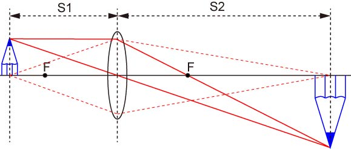
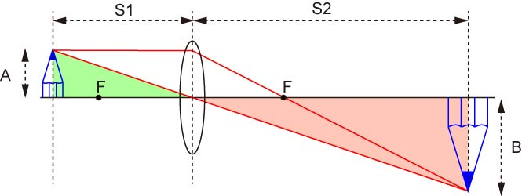
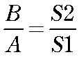

もし，F=１００mmで，S1＝２００mm，の場合，

１／２００＋１／S2＝１／１００
S2=２００
S2/S1＝１
となります．
つまり，拡大率は１，同じ大きさの像が結像されます．
さて，レンズには光を集光させる能力を持っていることがわかりました．
実は，ものを拡大する性質も持っているのです．

さて，前ページと同様に，左側のレンズからS１の距離から発せられた光の軌跡を追ってみましょう．
点線は前ページ同様，レンズと同じ軸から発せられた光の軌跡です，S2の位置に集光していることがわかります．
さて，S1の位置に鉛筆を置いて，その先端からの光がどうなるかを考えていきましょう．
まずは，軸と平行な光．
これは，平行なので，レンズを通して右側の焦点に到達し，さらに進んでいきます．
次に，レンズの中心に向かう光．
先ほど述べたように，レンズの左右は区別されないので，左から来ようが右から来ようが違いがありません．
つまり，レンズの中心に向かう光は，屈折されずに直進するのです．
この二つの光が交差する点が，鉛筆の先端が像を結ぶ点です．
このことを，
結像
と呼びます．
もちろん，鉛筆の先端からの光はこの2点，平行な光，と中心に向かう光だけではありません．
レンズに入射されたすべての点が右側に集光されるのです．
では，この高さはどうなるのでしょう？
下の図のAとBとの比を求めてみましょう．

ここで，色づけしたエリア，を注目してみましょう．
緑の三角形とピンクの三角形は相似形ですね．
ですので，

となり，像が拡大されて，拡大率が上の式で表すことができるのです．
では，例を挙げてみましょう．
・焦点距離の2倍の場合
もし，F=１００mmで，S1＝２００mm，の場合，
１／２００＋１／S2＝１／１００
S2=２００
S2/S1＝１
となります．
つまり，拡大率は１，同じ大きさの像が結像されます．
・焦点距離の３倍の場合
もし，F=１００mmで，S1＝３００mm，の場合，

１／３００＋１／S2＝１／１００
S2=１５０
S2/S1＝０．５
となります．
つまり，焦点距離の３倍の場合，縮小された像が結像されます．
つまり，物体をできるだけ，焦点に近づければ，大きな像を得ることができるのです．
たとえば，
F=100mmで110mmに物体をおいた場合，11倍
F=100mmで101mmに物体をおいた場合，101倍
F=100mmで100.1mmに物体をおいた場合，1001倍
となります．
結構微妙ですね．．．．
最後の１００１倍の場合，ほんのちょっと動かしただけで拡大率が大幅に変わり，さらに100mmをちょっとでも下回った場合，結像されなくなってしまうのです．
さらにちょっとでも物体に厚みがあった場合，それぞれに拡大率が変わってしまいます．
となると，レンズによる拡大はこの程度なのでしょうか？
違います！
それが，顕微鏡なのです．